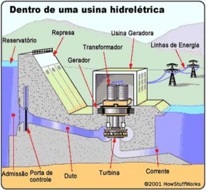
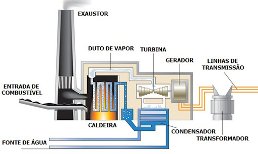
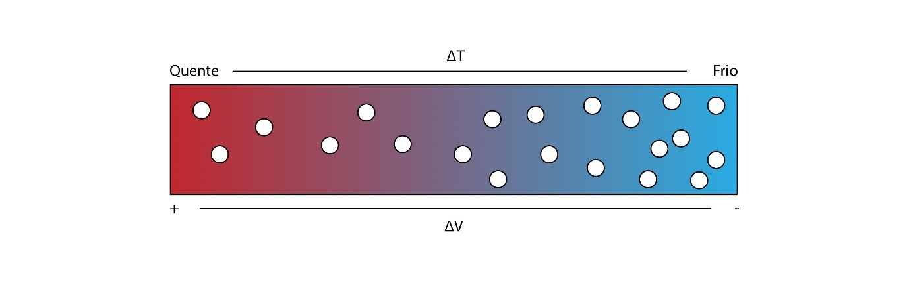
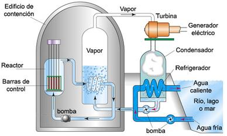
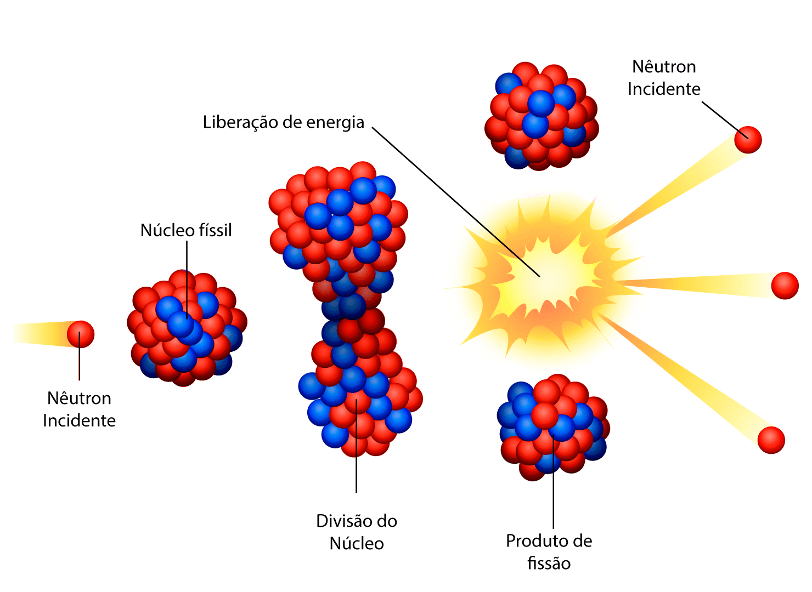
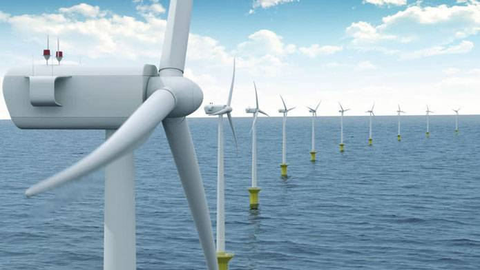
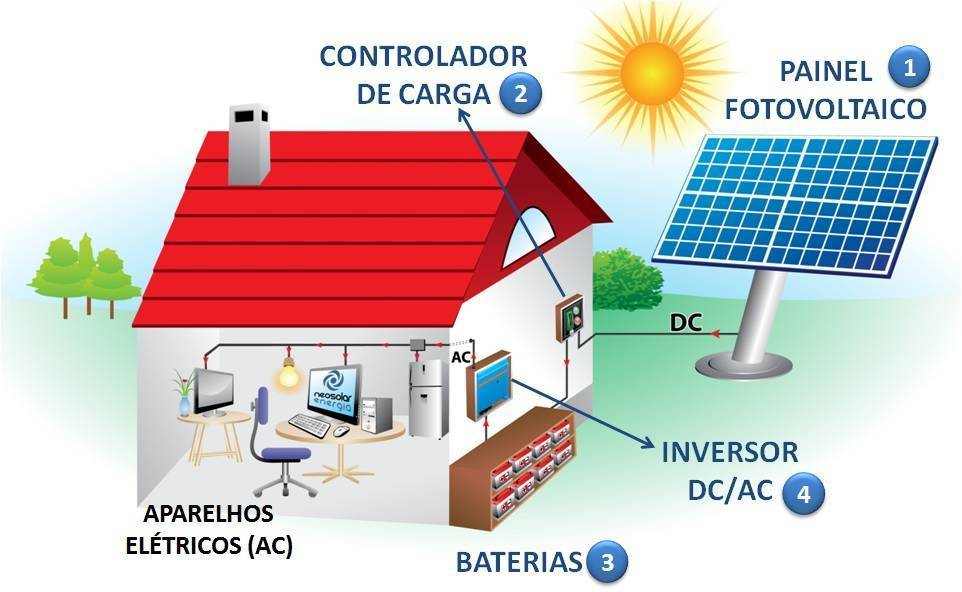
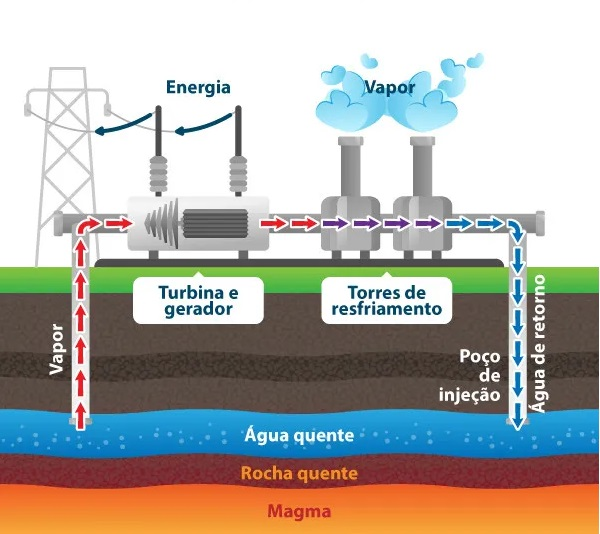
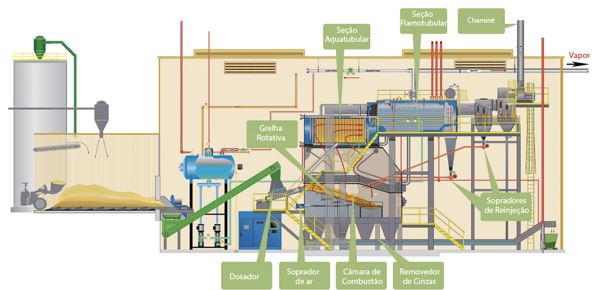

Geradores de Energia
Os geradores de energia são dispositivos ou sistemas que produzem energia elétrica a partir de diferentes fontes. Cada tipo de gerador tem uma origem específica, um princípio de funcionamento distinto e um impacto ambiental particular. Vamos explorar alguns dos principais geradores de energia:
Hidrelétrica
Origem e Descoberta
A energia hidrelétrica tem suas raízes na antiguidade, quando as civilizações utilizavam a força da água para mover moinhos e outros dispositivos mecânicos. A utilização da água em rodas hidráulicas remonta a civilizações antigas como a grega e a romana.
A descoberta da eletricidade no século XIX abriu caminho para a utilização da energia hídrica na geração de eletricidade. Em 1882, a primeira usina hidrelétrica comercial do mundo, a Vulcan Street Plant, começou a operar em Appleton, Wisconsin, nos Estados Unidos. Este marco foi crucial para o desenvolvimento das usinas hidrelétricas modernas.
Funcionamento dos Geradores Hidrelétricos
Os geradores hidrelétricos funcionam convertendo a energia cinética da água em energia elétrica. O processo pode ser descrito em várias etapas:
Reservatório de Água: A água é armazenada em um reservatório ou represa.
Entrada da Água: A água é liberada do reservatório através de comportas, movendo-se por um canal ou túnel em direção às turbinas.
Turbinas: A água em movimento gira as turbinas, que estão conectadas a geradores. A energia cinética da água é transformada em energia mecânica.
Geradores: As turbinas estão acopladas a geradores. Quando as turbinas giram, elas movem os rotores dos geradores, que transformam a energia mecânica em energia elétrica por meio de indução eletromagnética.
Transformadores: A energia elétrica gerada é então passada por transformadores para ajustar a tensão e ser transmitida pela rede elétrica.
Quantidade de Geradores Hidrelétricos no Mundo
A energia hidrelétrica é uma das principais fontes de energia renovável no mundo. A quantidade de usinas hidrelétricas varia de acordo com o país e a capacidade de aproveitamento dos recursos hídricos disponíveis. Aqui estão alguns dados relevantes:
China: É o maior produtor de energia hidrelétrica do mundo, com usinas como a Barragem das Três Gargantas, que é a maior usina hidrelétrica do mundo em termos de capacidade instalada (22,5 GW).
Brasil: O Brasil possui grandes usinas hidrelétricas, como Itaipu, que é uma das maiores do mundo com uma capacidade instalada de 14 GW.
Estados Unidos: A energia hidrelétrica também é significativa nos Estados Unidos, com a Hoover Dam e a Grand Coulee Dam sendo exemplos notáveis.
Canadá: O Canadá é um dos maiores produtores de energia hidrelétrica, com uma rede extensa de usinas espalhadas pelo país.
Outros Países: Outros países com grandes capacidades hidrelétricas incluem a Rússia, a Índia, a Noruega e a Suécia.
Segundo a Agência Internacional de Energia (IEA), a capacidade mundial de geração de energia hidrelétrica em 2020 era de aproximadamente 1.300 gigawatts (GW). Este número representa cerca de 16% da capacidade total de geração de eletricidade no mundo e cerca de 60% da capacidade global de geração de eletricidade renovável.
Importância e Futuro da Energia Hidrelétrica
A energia hidrelétrica é crucial para a matriz energética global devido à sua capacidade de fornecer grandes quantidades de energia limpa e renovável. Além disso, usinas hidrelétricas têm a capacidade de responder rapidamente às variações na demanda de energia, oferecendo uma fonte de energia confiável e estável.
No futuro, o desenvolvimento de tecnologias de micro e pequenas hidrelétricas pode expandir ainda mais o uso da energia hidrelétrica, especialmente em regiões remotas. Além disso, a modernização e a otimização das usinas existentes podem aumentar a eficiência e a capacidade de geração.
Em resumo, os geradores hidrelétricos desempenham um papel vital na produção de energia sustentável e continuarão a ser uma peça fundamental na transição para uma matriz energética global mais limpa e eficiente.
Termoelétrica
Origem e Descoberta
Os geradores termoelétricos têm uma origem que remonta ao século XIX, com a descoberta do efeito termoelétrico por Thomas Johann Seebeck em 1821. Seebeck descobriu que uma corrente elétrica pode ser gerada a partir da diferença de temperatura entre dois metais diferentes conectados em um circuito fechado. Este fenômeno é conhecido como efeito Seebeck, que é a base do funcionamento dos geradores termoelétricos.
A utilização prática dos geradores termoelétricos começou a ser explorada no século XX, especialmente durante a Segunda Guerra Mundial e na era espacial, onde a confiabilidade e a ausência de partes móveis tornavam essas tecnologias particularmente úteis.
Funcionamento dos Geradores Termoelétricos
Os geradores termoelétricos convertem diretamente o calor em eletricidade usando o efeito Seebeck.
O funcionamento pode ser descrito da seguinte maneira:
Fonte de Calor: A energia térmica é fornecida por uma fonte de calor. Esta pode ser uma chama, um reator nuclear, ou qualquer outra fonte de calor.
Materiais Termoelétricos: Materiais com propriedades termoelétricas são colocados em um circuito. Estes materiais têm a capacidade de gerar uma tensão elétrica quando há uma diferença de temperatura entre suas extremidades.
Diferença de Temperatura: A diferença de temperatura entre a fonte de calor e a fonte fria cria um gradiente térmico através dos materiais termoelétricos.
Geração de Eletricidade: O gradiente térmico provoca o movimento de portadores de carga (elétrons ou buracos) dentro dos materiais termoelétricos, gerando uma corrente elétrica.
Conversão e Uso: A corrente elétrica gerada pode ser utilizada diretamente ou armazenada em baterias para uso posterior.
Quantidade de Geradores Termoelétricos no Mundo
Os geradores termoelétricos são usados em aplicações específicas onde a confiabilidade e a durabilidade são cruciais. Algumas das principais áreas de aplicação incluem:
Espaço: Os geradores termoelétricos de radioisótopos (RTGs) são amplamente utilizados em sondas espaciais, satélites e outros equipamentos espaciais. Eles são confiáveis e podem fornecer energia por longos períodos, como visto em missões como Voyager e Curiosity.
Industrial: Utilizados em ambientes industriais para recuperar energia de processos de alta temperatura, convertendo calor residual em eletricidade.
Militar: Usados em equipamentos militares para fornecer energia em situações onde o acesso à eletricidade é limitado.
Dispositivos Portáteis: Alguns dispositivos portáteis e sensores utilizam geradores termoelétricos para alimentar equipamentos em locais remotos.
Apesar de sua utilidade, os geradores termoelétricos representam uma pequena fração da geração total de eletricidade global devido à sua eficiência relativamente baixa e ao custo elevado dos materiais termoelétricos.
Importância e Futuro da Energia Termoelétrica
A energia termoelétrica oferece algumas vantagens únicas, como a capacidade de gerar eletricidade em ambientes extremos e de maneira contínua sem partes móveis. No entanto, para se tornarem uma fonte de energia mais comum, melhorias na eficiência dos materiais termoelétricos e reduções nos custos de produção são necessárias.
Pesquisas em novos materiais, como nanocompósitos e semicondutores avançados, estão em andamento para melhorar a eficiência dos geradores termoelétricos. Além disso, a integração de geradores termoelétricos em sistemas de recuperação de calor em larga escala pode aumentar sua viabilidade econômica e ambiental.
Em resumo, enquanto os geradores termoelétricos são atualmente utilizados em nichos específicos, eles têm o potencial de contribuir para a matriz energética global, especialmente em aplicações onde a confiabilidade e a durabilidade são essenciais. O avanço contínuo na pesquisa de materiais e tecnologias promete tornar os geradores termoelétricos mais eficientes e economicamente viáveis no futuro.
Nuclear
Origem e Descoberta
A descoberta da fissão nuclear, o processo pelo qual o núcleo de um átomo se divide em dois ou mais núcleos menores, liberando uma grande quantidade de energia, foi um marco na história da ciência. Em 1938, os físicos alemães Otto Hahn e Fritz Strassmann descobriram a fissão nuclear do urânio. Pouco depois, Lise Meitner e Otto Frisch explicaram o fenômeno.
O uso prático da energia nuclear para a geração de eletricidade começou após a Segunda Guerra Mundial. A primeira usina nuclear comercial do mundo foi inaugurada em 1954 em Obninsk, na União Soviética. Nos Estados Unidos, a usina nuclear de Shippingport, na Pensilvânia, começou a operar em 1957.
Funcionamento dos Geradores Nucleares
Os geradores nucleares, ou reatores nucleares, produzem eletricidade a partir da energia liberada pela fissão nuclear. O processo pode ser descrito da seguinte maneira:
Reação de Fissão: A fissão nuclear ocorre quando núcleos de átomos pesados, como o urânio-235 ou plutônio-239, são bombardeados com nêutrons, causando a divisão do núcleo em núcleos menores e liberando uma grande quantidade de energia na forma de calor, além de mais nêutrons.
Moderador e Controle: Em um reator nuclear, o núcleo contém barras de combustível (geralmente urânio ou plutônio) e é rodeado por um moderador (água, grafite ou outro material) que reduz a velocidade dos nêutrons para manter a reação em cadeia controlada. Barras de controle feitas de materiais que absorvem nêutrons são usadas para ajustar a taxa de fissão.
Geração de Calor: O calor gerado pela fissão nuclear aquece a água em um circuito primário, que circula através do reator.
Geração de Vapor: O calor do circuito primário é transferido para um circuito secundário através de um gerador de vapor, onde a água é transformada em vapor.
Turbinas e Geradores: O vapor gerado é direcionado para turbinas, fazendo-as girar. As turbinas estão conectadas a geradores que convertem a energia mecânica em eletricidade.
Condensação: O vapor é então resfriado em condensadores, transformando-se de volta em água para ser reutilizado no sistema.
Quantidade de Geradores Nucleares no Mundo
A energia nuclear é uma importante fonte de eletricidade em muitos países ao redor do mundo. A distribuição e a quantidade de reatores nucleares variam por país, mas alguns dos maiores utilizadores de energia nuclear incluem:
Estados Unidos: Possuem o maior número de reatores nucleares operacionais, com 93 reatores em operação, fornecendo cerca de 20% da eletricidade do país.
França: Depende fortemente da energia nuclear, com 56 reatores que geram cerca de 70% da eletricidade do país.
China: Tem expandido rapidamente sua capacidade nuclear, com 54 reatores operacionais e muitos outros em construção.
Rússia: Possui 38 reatores em operação, com planos de expansão significativa.
Japão: Antes do desastre de Fukushima em 2011, o Japão tinha 54 reatores operacionais. Desde então, muitos foram desativados, mas alguns reatores foram reiniciados e a energia nuclear ainda representa uma parte importante da matriz energética do país.
Segundo a Agência Internacional de Energia Atômica (AIEA), existem cerca de 440 reatores nucleares operacionais em todo o mundo, com uma capacidade total de aproximadamente 390 gigawatts elétricos (GWe). Além disso, vários países estão em processo de construir novos reatores para aumentar sua capacidade de geração nuclear.
Importância e Futuro da Energia Nuclear
A energia nuclear oferece várias vantagens:
Baixas Emissões de Carbono: A geração de eletricidade a partir de energia nuclear produz baixas emissões de gases de efeito estufa, contribuindo para a mitigação das mudanças climáticas.
Capacidade de Base: Usinas nucleares podem fornecer uma quantidade constante e significativa de eletricidade, funcionando como uma fonte de energia de base.
Redução da Dependência de Combustíveis Fósseis: A energia nuclear ajuda a diversificar a matriz energética e reduzir a dependência de combustíveis fósseis.
No entanto, a energia nuclear também enfrenta desafios significativos, incluindo:
Segurança: A segurança dos reatores é uma preocupação crítica, especialmente após acidentes como Chernobyl e Fukushima.
Resíduos Nucleares: O manejo e a disposição dos resíduos nucleares radioativos são desafios técnicos e ambientais.
Custo: A construção e manutenção de usinas nucleares são altamente dispendiosas.
O futuro da energia nuclear pode envolver a adoção de novas tecnologias, como reatores modulares pequenos (SMRs) e reatores de quarta geração, que prometem melhorar a segurança, reduzir custos e minimizar os resíduos. A pesquisa e o desenvolvimento contínuos são essenciais para enfrentar os desafios e maximizar os benefícios da energia nuclear como parte de uma matriz energética sustentável.
Em resumo, os geradores nucleares são uma fonte significativa de energia elétrica global, com potencial para contribuir para um futuro energético mais limpo e sustentável, desde que os desafios técnicos, econômicos e de segurança possam ser adequadamente gerenciados.
Eolica

Origem e Descoberta
Os primeiros usos do vento para gerar energia datam de milhares de anos atrás, quando civilizações antigas usavam moinhos de vento para bombear água e moer grãos. Esses moinhos de vento, desenvolvidos na Pérsia por volta de 500-900 d.C., eram bastante rudimentares comparados às turbinas eólicas modernas.
A aplicação do vento para a geração de eletricidade começou no final do século XIX. Em 1887, o professor escocês James Blyth construiu a primeira turbina eólica para gerar eletricidade, usando-a para iluminar sua casa. Pouco depois, Charles F. Brush, um inventor americano, construiu uma turbina eólica com 12 kW de capacidade, usada para carregar baterias em sua casa em Cleveland, Ohio.
Funcionamento dos Geradores Eólicos
Os geradores eólicos convertem a energia cinética do vento em energia elétrica. O processo pode ser descrito da seguinte maneira:
Captura do Vento: As pás da turbina capturam o vento, que faz com que as pás girem em torno de um eixo.
Transmissão da Energia Mecânica: As pás estão conectadas a um eixo que gira junto com elas. Este eixo está ligado a um multiplicador de velocidade (gearbox) que aumenta a rotação.
Geração de Eletricidade: O eixo do multiplicador está conectado a um gerador, geralmente um gerador de indução ou síncrono, que converte a energia mecânica em energia elétrica.
Transformação e Distribuição: A eletricidade gerada é transformada para uma tensão apropriada e então transmitida para a rede elétrica para distribuição.
Quantidade de Geradores Eólicos no Mundo
A energia eólica tem crescido significativamente nas últimas décadas e representa uma parte crescente da matriz energética global. A capacidade instalada de energia eólica varia entre os países, mas alguns dos maiores produtores são:
China: É o maior produtor mundial de energia eólica, com uma capacidade instalada que ultrapassa os 280 gigawatts (GW).
Estados Unidos: A capacidade instalada nos EUA é de cerca de 120 GW.
Alemanha: É um dos líderes na Europa, com uma capacidade instalada de aproximadamente 60 GW.
Índia: Também tem uma significativa capacidade instalada, com cerca de 40 GW.
Espanha, Reino Unido, e Brasil: Outros países com grandes capacidades eólicas instaladas, contribuindo significativamente para suas matrizes energéticas.
Segundo o Conselho Global de Energia Eólica (GWEC), a capacidade total instalada de energia eólica no mundo superou os 750 GW em 2020 e continua a crescer à medida que novos parques eólicos são instalados e tecnologias mais eficientes são desenvolvidas.
Importância e Futuro da Energia Eólica
A energia eólica é uma das fontes de energia renovável de mais rápido crescimento no mundo. Seus benefícios incluem:
Sustentabilidade: A energia eólica é uma fonte limpa e renovável, sem emissões de gases de efeito estufa durante a operação.
Redução de Custos: Os custos da energia eólica têm diminuído significativamente, tornando-a competitiva com fontes tradicionais de energia.
Desenvolvimento Tecnológico: Avanços contínuos em tecnologia, como turbinas maiores e mais eficientes, melhoram a viabilidade econômica e a capacidade de geração.
O futuro da energia eólica é promissor, com potencial para expansão tanto em terra (onshore) quanto no mar (offshore). A energia eólica offshore, em particular, está ganhando destaque devido ao potencial de captar ventos mais fortes e consistentes.
Em resumo, os geradores eólicos desempenham um papel crucial na transição para uma matriz energética global mais sustentável. Com o contínuo desenvolvimento tecnológico e o aumento do investimento em energia renovável, a energia eólica está bem posicionada para se tornar uma das principais fontes de energia do futuro.
Solar
Origem e Descoberta
A origem dos geradores solares remonta à descoberta do efeito fotovoltaico. Em 1839, o físico francês Alexandre Edmond Becquerel descobriu que certos materiais podiam gerar pequenas quantidades de corrente elétrica quando expostos à luz. Este efeito fotovoltaico é a base da tecnologia solar.
No início do século XX, Albert Einstein explicou o efeito fotovoltaico em 1905, pelo qual recebeu o Prêmio Nobel de Física em 1921. No entanto, a primeira célula solar prática foi desenvolvida em 1954 por pesquisadores dos Laboratórios Bell nos Estados Unidos, que criaram uma célula de silício com eficiência de 6%.
Funcionamento dos Geradores Solares
Os geradores solares convertem a energia da luz solar em energia elétrica usando células fotovoltaicas (PV). O funcionamento pode ser descrito da seguinte maneira:
Células Fotovoltaicas: As células fotovoltaicas são compostas de materiais semicondutores, como o silício. Quando a luz solar atinge a célula, os fótons da luz excitam os elétrons do material semicondutor, criando pares de elétrons-lacunas.
Geração de Corrente Elétrica: Os elétrons excitados se movem através do material, criando uma corrente elétrica. As células PV possuem uma junção PN que cria um campo elétrico, separando os elétrons e as lacunas e gerando uma corrente direta (DC).
Conversão para Corrente Alternada: A corrente elétrica gerada é DC, mas a maioria das redes elétricas e dispositivos utilizam corrente alternada (AC). Inversores são usados para converter a DC em AC.
Distribuição e Uso: A eletricidade gerada pode ser usada imediatamente, armazenada em baterias para uso posterior, ou injetada na rede elétrica.
Quantidade de Geradores Solares no Mundo
A energia solar tem crescido rapidamente nas últimas décadas e é uma das fontes de energia renovável de mais rápido crescimento. A capacidade instalada de energia solar varia entre os países, mas alguns dos maiores utilizadores de energia solar incluem:
China: É o maior produtor de energia solar do mundo, com uma capacidade instalada que ultrapassa os 250 gigawatts (GW).
Estados Unidos: Possuem uma capacidade instalada de energia solar de aproximadamente 100 GW.
Japão: Tem uma capacidade instalada significativa, com cerca de 70 GW.
Alemanha: É um dos líderes na Europa, com uma capacidade instalada de cerca de 60 GW.
Índia: Também tem uma grande capacidade instalada, com cerca de 50 GW.
Segundo a Agência Internacional de Energia Renovável (IRENA), a capacidade total instalada de energia solar no mundo ultrapassou os 800 GW em 2021 e continua a crescer rapidamente à medida que os custos das tecnologias solares diminuem e a eficiência aumenta.
Importância e Futuro da Energia Solar
A energia solar oferece várias vantagens:
Sustentabilidade: A energia solar é uma fonte limpa e renovável, sem emissões de gases de efeito estufa durante a operação.
Redução de Custos: Os custos das tecnologias solares têm diminuído significativamente, tornando-as cada vez mais acessíveis.
Flexibilidade: Sistemas solares podem ser instalados em várias escalas, desde pequenos sistemas residenciais até grandes usinas solares.
No entanto, a energia solar também enfrenta desafios:
Intermitência: A geração de eletricidade solar depende da disponibilidade de luz solar, o que varia ao longo do dia e das estações.
Armazenamento: A armazenagem de energia é crucial para garantir um fornecimento estável, especialmente durante a noite ou em dias nublados. Avanços em tecnologias de baterias são essenciais.
Uso do Terreno: Grandes usinas solares requerem áreas extensas, o que pode ser um desafio em regiões com disponibilidade limitada de terra.
O futuro da energia solar é promissor, com o desenvolvimento contínuo de tecnologias mais eficientes e acessíveis. A pesquisa em novos materiais, como perovskitas, e inovações em sistemas de armazenamento de energia estão expandindo as possibilidades da energia solar.
Em resumo, os geradores solares desempenham um papel crucial na transição para uma matriz energética global mais sustentável. Com o contínuo avanço tecnológico e o aumento do investimento em energia renovável, a energia solar está bem posicionada para se tornar uma das principais fontes de energia do futuro.
Geotérmica
Origem e Descoberta
A utilização da energia geotérmica remonta a milhares de anos, com registros históricos de civilizações antigas, como os romanos, chineses e nativos americanos, usando fontes termais para banhos e aquecimento. No entanto, a aplicação moderna da energia geotérmica para a geração de eletricidade começou no início do século XX.
A primeira usina geotérmica foi construída em 1904 em Larderello, na Itália, por Piero Ginori Conti, onde a energia do vapor natural foi usada para acionar um gerador e produzir eletricidade. Desde então, a tecnologia geotérmica tem evoluído significativamente.
Funcionamento dos Geradores Geotérmicos
Os geradores geotérmicos convertem o calor do interior da Terra em eletricidade. O processo pode ser descrito da seguinte maneira:
Fontes de Calor Geotérmico: A energia geotérmica é derivada do calor armazenado nas rochas e líquidos no interior da Terra. Este calor pode vir do magma, da decomposição de materiais radioativos ou do calor residual da formação do planeta.
Perfuração de Poços: Poços são perfurados na crosta terrestre até reservatórios de água quente ou vapor.
Extração de Calor: A água quente ou vapor é extraída através dos poços para a superfície.
Geração de Vapor: Em usinas de vapor seco, o vapor natural é usado diretamente para acionar turbinas. Em usinas de vapor flash, a água quente é depressurizada para formar vapor. Em usinas binárias, o calor da água geotérmica é transferido para um fluido secundário com ponto de ebulição mais baixo, que vaporiza e aciona as turbinas.
Turbinas e Geradores: O vapor ou fluido vaporizado faz girar as turbinas, que estão conectadas a geradores que convertem a energia mecânica em energia elétrica.
Reinjeção: A água resfriada ou condensada é reinjetada de volta no reservatório para sustentar o ciclo geotérmico.
Quantidade de Geradores Geotérmicos no Mundo
A energia geotérmica é uma fonte de energia renovável que está disponível em regiões com atividade tectônica e vulcânica significativa. Os maiores produtores de energia geotérmica incluem:
Estados Unidos: É o maior produtor de energia geotérmica, com uma capacidade instalada de cerca de 3,7 gigawatts (GW), principalmente na Califórnia.
Filipinas: Possui uma capacidade instalada de cerca de 1,9 GW.
Indonésia: Tem uma capacidade instalada de aproximadamente 2,1 GW, com potencial significativo para expansão devido à sua localização no Círculo de Fogo do Pacífico.
Nova Zelândia: Produz cerca de 1 GW de energia geotérmica.
México: Com uma capacidade instalada de cerca de 1 GW.
Segundo a Agência Internacional de Energia Renovável (IRENA), a capacidade total instalada de energia geotérmica no mundo é de aproximadamente 14 GW.
Importância e Futuro da Energia Geotérmica
A energia geotérmica oferece várias vantagens:
Sustentabilidade: É uma fonte de energia limpa e renovável com emissões de gases de efeito estufa muito baixas.
Confiabilidade: As usinas geotérmicas podem operar 24 horas por dia, fornecendo uma fonte de energia constante e estável.
Uso Eficiente do Terreno: As usinas geotérmicas ocupam menos espaço comparadas a outras fontes de energia renovável, como solar e eólica.
No entanto, a energia geotérmica também enfrenta desafios:
Localização Geográfica: É limitada a regiões com recursos geotérmicos adequados, geralmente em áreas tectonicamente ativas.
Custo Inicial: A perfuração de poços e a construção de usinas geotérmicas requerem altos investimentos iniciais.
Riscos Geológicos: Existe o risco de indução de sismos e outros impactos ambientais associados à perfuração e operação de usinas geotérmicas.
O futuro da energia geotérmica é promissor, com o desenvolvimento contínuo de tecnologias avançadas de perfuração e a exploração de novos recursos, incluindo sistemas geotérmicos aprimorados (EGS) que podem ampliar o uso da energia geotérmica para áreas menos ativas geologicamente.
Em resumo, os geradores geotérmicos são uma parte importante da matriz energética renovável global, oferecendo uma fonte de energia limpa, confiável e sustentável. Com os avanços tecnológicos e o aumento dos investimentos, a energia geotérmica pode desempenhar um papel ainda mais significativo no futuro energético mundial.
Biomassa
Origem e Descoberta
A utilização da biomassa como fonte de energia remonta aos primórdios da civilização humana, quando a queima de madeira foi usada para aquecimento e cozimento. No entanto, a utilização moderna da biomassa para geração de eletricidade e produção de biocombustíveis começou a se desenvolver de forma significativa durante o século XX, em resposta à busca por fontes de energia renovável e alternativas aos combustíveis fósseis.
A ciência moderna da conversão de biomassa em energia começou a tomar forma no início do século XX, mas foi durante as crises do petróleo nas décadas de 1970 e 1980 que o interesse em fontes de energia alternativas, incluindo a biomassa, se intensificou. A tecnologia de geração de energia a partir de biomassa evoluiu significativamente desde então, com avanços na eficiência de conversão e na redução das emissões associadas.
Funcionamento dos Geradores de Biomassa
Os geradores de biomassa convertem a matéria orgânica em energia elétrica e calor. O processo pode ser descrito da seguinte maneira:
Matéria-Prima: A biomassa pode incluir resíduos agrícolas (palha, bagaço de cana), resíduos florestais (madeira, galhos), resíduos urbanos (lixo orgânico), e culturas energéticas (milho, cana-de-açúcar).
Processo de Conversão: Existem várias tecnologias para converter biomassa em energia:
Combustão Direta: A biomassa é queimada em caldeiras para produzir vapor, que aciona turbinas conectadas a geradores elétricos.
Gaseificação: A biomassa é convertida em gás de síntese (syngas) por meio de um processo de aquecimento em alta temperatura com um controle de oxigênio. O syngas pode ser usado para gerar eletricidade ou como matéria-prima para produtos químicos.
Pirólise: A biomassa é aquecida na ausência de oxigênio, resultando em produtos como bio-óleo, carvão vegetal e gases que podem ser usados como combustível.
Digestão Anaeróbica: A biomassa orgânica é decomposta por microrganismos na ausência de oxigênio, produzindo biogás (principalmente metano e dióxido de carbono) que pode ser usado para gerar eletricidade.
Geração de Vapor: Na combustão direta e na gaseificação, o calor gerado é usado para produzir vapor.
Turbinas e Geradores: O vapor ou gás produzido é usado para acionar turbinas conectadas a geradores, que convertem a energia mecânica em energia elétrica.
Distribuição e Uso: A eletricidade gerada é distribuída pela rede elétrica ou utilizada localmente.
Quantidade de Geradores de Biomassa no Mundo
A energia de biomassa é uma fonte significativa de energia renovável em muitos países. Alguns dos principais utilizadores de biomassa incluem:
Estados Unidos: Tem uma capacidade instalada significativa de geração de energia a partir de biomassa, com aproximadamente 16 GW.
Brasil: É um dos líderes mundiais no uso de biomassa, especialmente bagaço de cana-de-açúcar, com uma capacidade instalada de cerca de 14 GW.
China: Possui uma crescente capacidade de geração de energia de biomassa, com aproximadamente 17 GW.
Alemanha: Utiliza uma variedade de fontes de biomassa, incluindo resíduos agrícolas e florestais, com uma capacidade instalada de cerca de 9 GW.
Índia: Tem uma capacidade instalada de cerca de 10 GW, com foco em resíduos agrícolas e florestais.
Segundo a Agência Internacional de Energia Renovável (IRENA), a capacidade total instalada de energia de biomassa no mundo é de aproximadamente 130 GW, e está em crescimento devido ao aumento do interesse em fontes de energia renovável e sustentável.
Importância e Futuro da Energia de Biomassa
A energia de biomassa oferece várias vantagens:
Renovabilidade: A biomassa é uma fonte de energia renovável, desde que as práticas de cultivo e coleta sejam sustentáveis.
Redução de Resíduos: O uso de resíduos agrícolas, florestais e urbanos para a geração de energia ajuda a reduzir a quantidade de resíduos destinados a aterros.
Emissões de Carbono: A queima de biomassa libera CO₂, mas é considerado neutro em carbono, pois a quantidade de CO₂ liberada é aproximadamente igual à quantidade absorvida pelas plantas durante seu crescimento.
No entanto, a energia de biomassa também enfrenta desafios:
Sustentabilidade: A coleta e o uso de biomassa devem ser geridos de forma sustentável para evitar a degradação do solo e a perda de biodiversidade.
Emissões: Embora a biomassa seja considerada neutra em carbono, a combustão pode liberar outros poluentes, como partículas e óxidos de nitrogênio, que precisam ser controlados.
Custo e Eficiência: A infraestrutura e os custos de conversão ainda podem ser altos em comparação com outras fontes de energia renovável.
O futuro da energia de biomassa envolve o desenvolvimento de tecnologias mais eficientes e sustentáveis, como a melhoria dos processos de gaseificação e digestão anaeróbica, além da integração com outras fontes de energia renovável para criar sistemas de energia híbridos e mais resilientes.
Em resumo, os geradores de biomassa são uma parte importante da matriz energética global, contribuindo para a diversificação das fontes de energia e ajudando a mitigar as mudanças climáticas. Com o avanço tecnológico e a adoção de práticas sustentáveis, a energia de biomassa pode desempenhar um papel ainda mais significativo no futuro energético mundial.